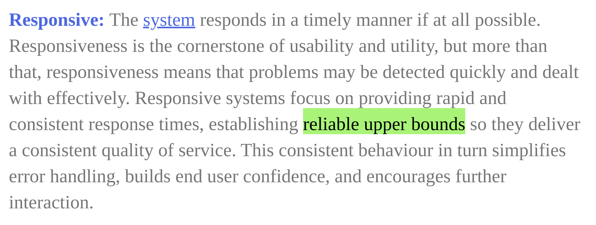

Enter at your own risk, this slide deck needs 1000px or so of screen width to be fully navigable
Dr. StrangeData, Or:
How I Learned To Stop
Worrying, And Love
the_geom
Designing
Spatial
Applications
is (fairly) hard
Performance in spatial systems
A non-exhaustive list of historical big bangs in GIS that were invented to alleviate performance issues
- Spatial indexes
- Image overviews or "raster pyramids"
- Pre-rendered cartographic raster tile caches
- Vector tiles
Fixing our problems has always been about Big Ideas—but are our designs too reliant on Big Ideas?
Guarantees and upper bounds
(excerpted from The Reactive Manifesto)
Almost all sufficiently complex spatial applications remain vulnerable to conditions of poor, unresponsive performance.
What's good about guarantees
| Guarantees | Big Ideas |
| User experience | The worst experience is defined | The average experience is improved |
| What do we know? | The worst for a system is no worse than the worst of all of its components | We don't readily know how components' good and bad behaviour will relate |
| Design decisions | Can be made with confidence for the worst case | Can only be made with some risk |
Looking at a basic spatial operation
- A commonly implemented function: the user defines an Area of Interest in relation to a set of configured layers
- The geographical intersection of each layer with the Area of Interest is computed and extracted or visualised
How can we reason about this feature?
- What does openness buy us in our software foundations?
- eg in Turfjs the algorithm used is the the Martinez-Rueda polygon clipping algorithm
- The complexity of the Martinez algorithm is O((n+k)*log(n)), where:
- n is the number of all edges in the interacting polygons
- k is the number of all interactions between polygon edges
- O(n*log(n)) is already not too great
- Dependent on both size and spatial relations of the input data!
- It turns out that useful guarantees are hard to obtain here
Measuring input data size
PostGIS
SELECT ST_NPoints(geom);
Turfjs
const line = turf.lineString([[-83, 30], [-84, 36], [-78, 41]])
console.log(line.coordinates.length)
Measuring spatial relations
- Patterns of relation between geographical record types are often un-recorded relations of the real things they are recording
- We don't have a straightforward technical practice that understands "in the suburbs, roads and houses go together"
- ideas like spatial correlation, proximity analysis, and similarity measures
- ad hoc measures, eg "mean envelope per feature in a layer"
- However: these patterns make a very big difference to the risk and variation of spatial operation complexity
Ways to estimate job size?
- Create a heuristic function that combines known metrics on the inputs to the job
- eg sum the vertex counts of two inputs
- Use a simplified representation of application data to do a "dumbed down" pre-estimate the cost of a full process
- eg run an intersection against a square covering of the application's reference layers, instead of the layers themselves
- Estimates can trigger application logic
Mitigation - constraints
- Simplify input data through application constraints—for example
- eg the Area of Interest can only be a bounding box
- eg the Area of Interest can only have a maximum total area
- Reduce the size of input data
- Curate simplified variants of reference layers
Mitigation - regulating incoming data
- Prevent complex data (especially with low value) from entering the system
- Very important for systems that offer to ingest user data
- We're sorry, the maximum number of drill points you can upload is 1000
- Proactively report or alert when time and size limits are exceeded
- Record any related interactive user input and use in testing
- Question: how to reason about global limits given the metrics of a new record?
Mitigation - concealment
- Run processes asynchronously, or in the background
- But only when their estimated complexity exceeds a configured threshold
- Many applications have specific functions (printing, reporting) that run through a tasking environment regardless of performance
Exploration - synthesise random data
- An area poorly served by current libraries and frameworks
- Turfjs provides
@turf/random, which can generate random polygons, linestrings and points within a bbox- but eg only generates "simple" polygons using a radial method
- Generic PostgreSQL tools do not provide useful support for geometry
- There is no mainstream tool to generate data that's "similar" to a provided dataset, or data that expresses eg the spatial relatedness of two or more layers
Current output from @turf/random
Zero resemblance to real world data
Where to from here?
- We still don't build many solid, consistent spatial apps
- Measurement, defence and common sense need to be applied:
- to reference data
- to user-supplied data
- An emphasis on Big Ideas hides some of the underlying patterns of the things being represented
- FOSS4G would benefit from flexible geometry synthesisers
- More realistic test cases
- Property-based testing frameworks